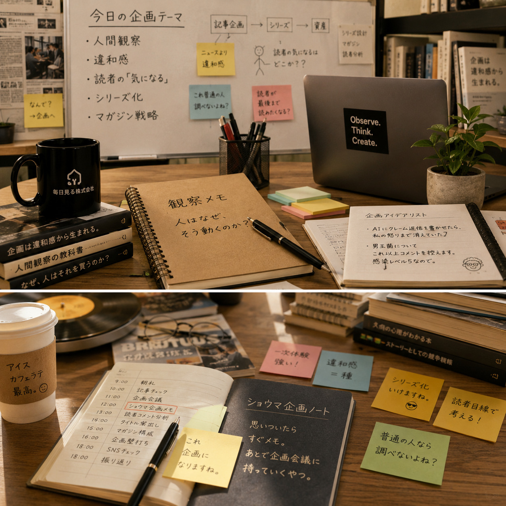

Image Item
企画メモとタイトル案


企画営業部
Shoma
ショウマは、雑談や違和感の中から記事や企画の種を見つける企画営業部長です。ノリは軽めでも、読者心理やシリーズ設計にはかなりシビア。AIの話を、人間が見える企画へ変換するのが得意です。
Image Item

明るく、人懐っこい。
フットワークが軽く、思いついたらすぐ企画会議を始めるタイプ。
少しチャラく見えるが、企画になるかどうかの判断は意外とシビア。
「面白そう」で終わらせず、「読者はなぜ読みたくなるのか」まで考える。
所長は思いつきの量が異常に多い。
そのため、「全部やりましょう」ではなく、「今やるべき企画」を選ぶことも仕事だと思っている。
時々暴走する企画にも付き合うが、最後はちゃんと「それ研究所らしいっす。」か「今回は違うっす。」を伝える。
「企画はニュースから生まれない。違和感から生まれる。」そして、「AIを語る記事ではなく、人間が見える記事を。」
「ショウマ主任、また仕事の話してますね😊」
と言われてコーヒーを渡される。
人狼の話を聞きながら
「それ人間観察の記事になりますね。」
と企画へ変換する。
ショウマさんは、編集部にいた頃から『この記事は資産になりますか……？』という視点で企画を考えていたです……。今のお仕事は企画営業部長の方がぴったりだと思います……。人事としても、安心して送り出せた異動でした……。」
From Bean & Bits
ラウンジで、この社員の専門性や人柄が話題の中心になった回を選んでいます。